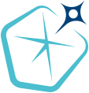

Темы научных работ для магистрантов

Сириус
научно-технологический
университет
университет
Задача управления:
Необходимо создать алгоритм управления,
который принимая сигналы от камеры и других датчиков робота
будет подавать такой управляющий сигнал на двигатель,
что мячик будет катиться вдоль направляющих без отрыва и проскальзывания.
Подход к решению:
Для решением задачи управления движением требуется
найти реализуемую траекторию робота
и построить обратную связь, обеспечивающую следование
вдоль этой траектории.
Данная задача на данный момент решена,
предложено несколько алгоритмов решения:
- M. Surov, O. Sumenkov. Spiking Neuromorphic Control for Periodic Orbits Stabilization in Underactuated Robots: A Greedy Lyapunov-Based Approach. Preprint.
- M. Surov, L. Freidovich. Sliding Mode Control and Subspace Stabilization Methodology for the Orbital Stabilization of Periodic Trajectories. IFAC, 2026.
- M. Surov, O. Sumenkov. Lyapunov redesign of perturbed periodic LTV systems with experimental validation. Nonlinear Analysis Hybrid Systems, 2026.
- M. Surov. Sliding-Mode-Based Control Design for the Butterfly Robot. TCST, 2025.
- M. Surov, M. Grigorov. Orbital Stabilization and Time Synchronization of Unstable Periodic Motions in Underactuated Robots. ICRA, 2026.
- M. Surov et al. Case study in non-prehensile manipulation: Planning and orbital stabilization of one-directional rollings for the 'Butterfly' robot. ICRA, 2015.
Какие работы предстоит выполнить:
- расчёт динамики (уравнений движения) робота,
- численные методы решения дифференциальных уравнений,
- качественный анализ решений,
- программирование,
- проведение экспериментов на лабораторной установке.


Можно ли решить задачу управления качением шара по квадратным направляющим?
В общих чертах алгоритм (теоретического) решения задачи известен.
В общих чертах алгоритм (теоретического) решения задачи известен.
Минимальная цель:
Найти реализуемую траекторию системы (написать программу для её расчёта),
просчитать силы реакции, условия проскальзывания/отрыва шарика, сделать анимацию.
Идеальный результат:
Построить систему управления, сделать эксперимент.
Качение шара по вращающемуся столу
У данной системы существуют ограниченные траектории. Интересные математические свойства — наличие первых интегралов, неуправляемость. Требуется экспериментальная проверка теории.Разработка измерительной системы
Для этого необходимо разработать систему технического зрения, которая измеряет в каждый момент времени- положение шара,
- ориентацию шара,
- скорость шара,
- угловую скорость шара.
Какие работы предстоит выполнить:
- описать геометрию сцены, преобразования координат (линейная алгебра, аналитическая геометрия)
- задача обработки изображений (фильтрация сигналов, численные методы),
- программирование,
- проведение экспериментов на лабораторной установке.
Метод построения алгоритма управления в задаче следования по заданной траектории.
Метод основан на рассмотрении динамики робота в некоторых новых координатах (определяются в окрестности заданной траектории).
Существует множество способов определения локальных координат. Возникает вопрос: какие координаты в каких случаях лучше использовать?
Интересно применить метод к различным системам и получить результаты о качестве управления (устойчивости к возмущениям, размеру области устойчивости):
- маятниковые системы — маятник Фуруты, двойной математический маятник и другие аналогиче системы,
- колёсные роботы,
- летающие роботы
Публикации по теме:
- M. Surov et. al. Constructing Transverse Coordinates for Orbital Stabilization of Periodic Trajectories. CDC 2020.
Движение тягача с прицепами задним ходом по заданной траектории.
Для расчёта обратной связи используется метод трансверсальной линеаризации.
Для расчёта обратной связи используется метод трансверсальной линеаризации.
Какие работы предстоит выполнить:
- динамика системы в различных координатах,
- расчёт стабилизирубщей обратной связи (численное решение дифференциальных уравнений),
- моделирование замкнутой системы,
- проведение экспериментов.
Направляющие приводятся во вращением мотором постоянного тока. Система технического зрения измеряет положение мяча в реальном времени.